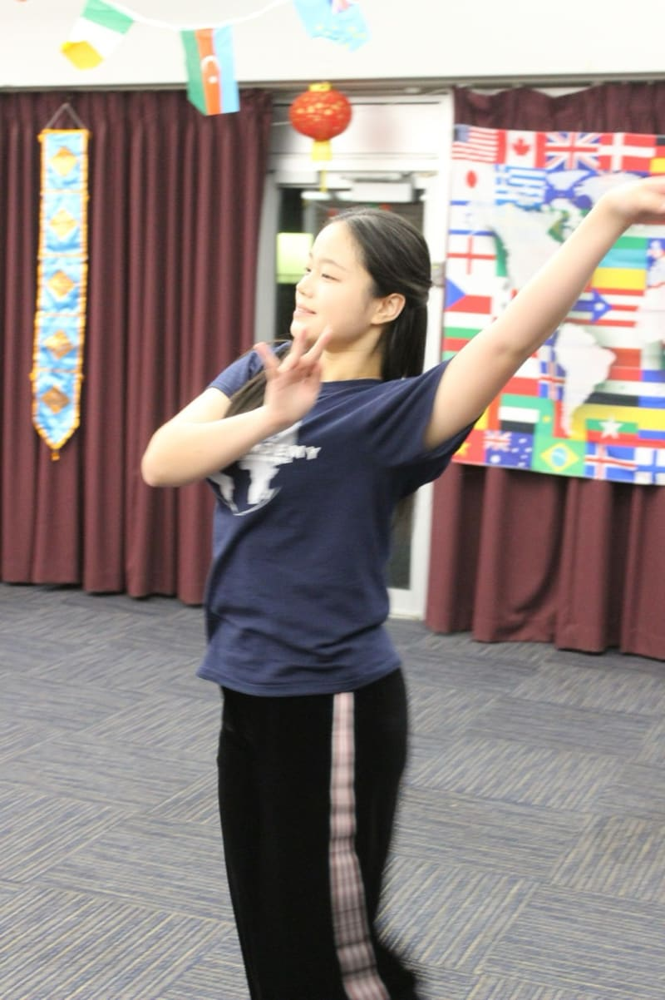
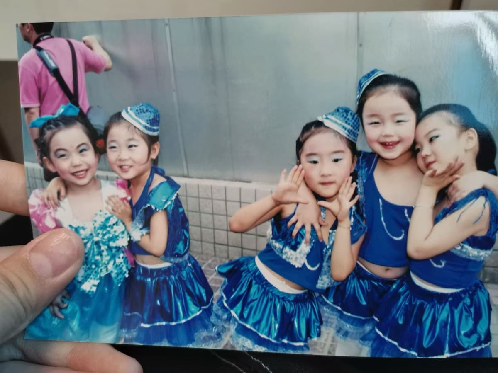
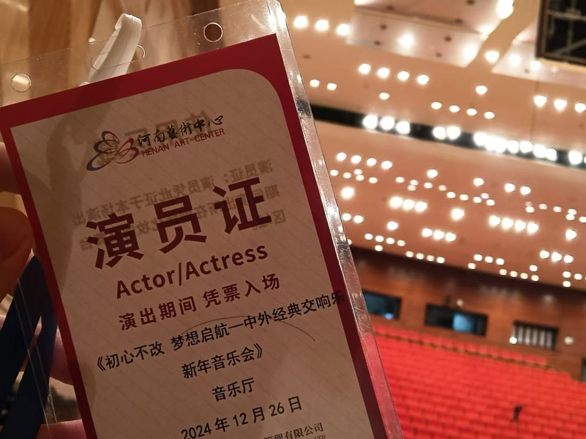
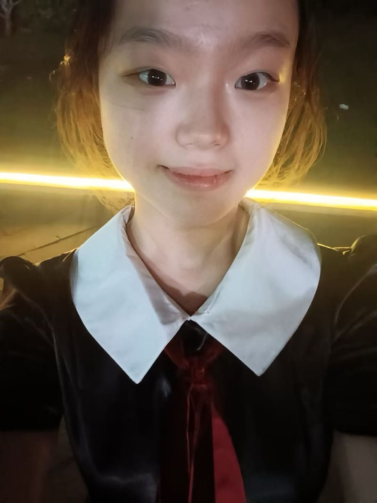
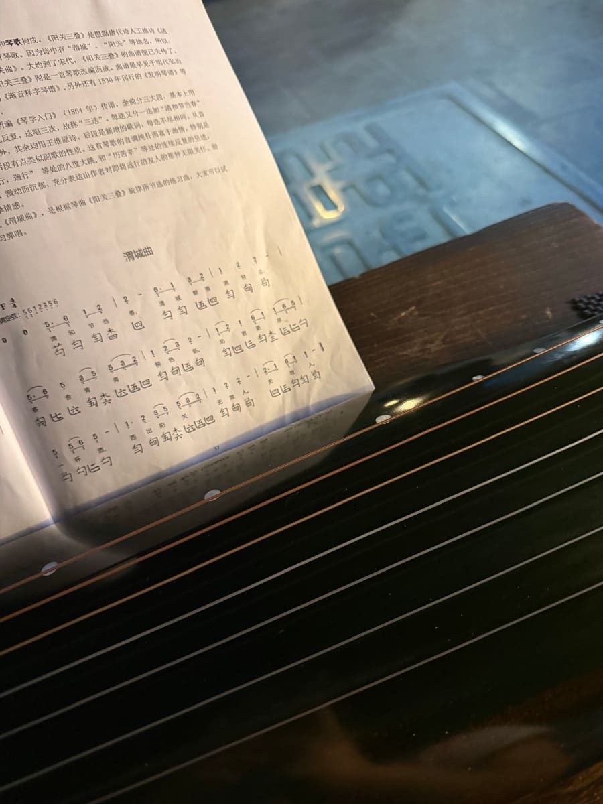
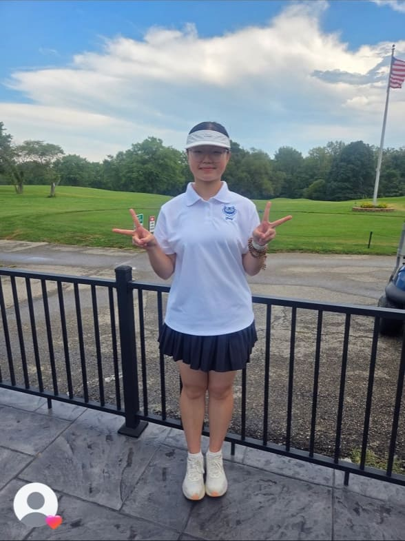
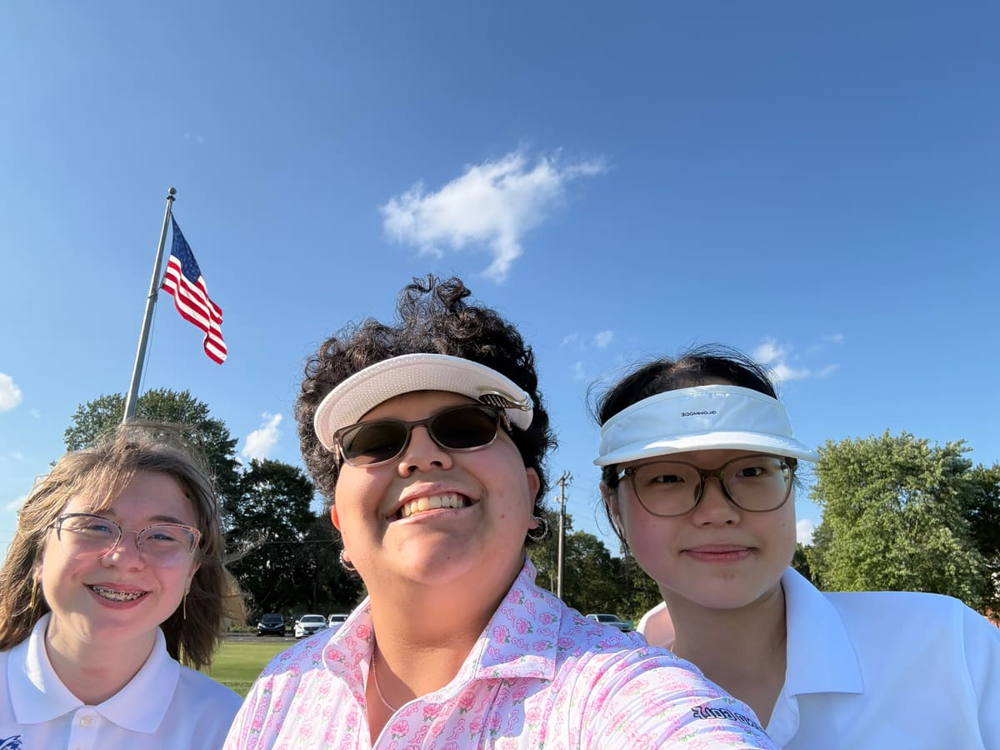
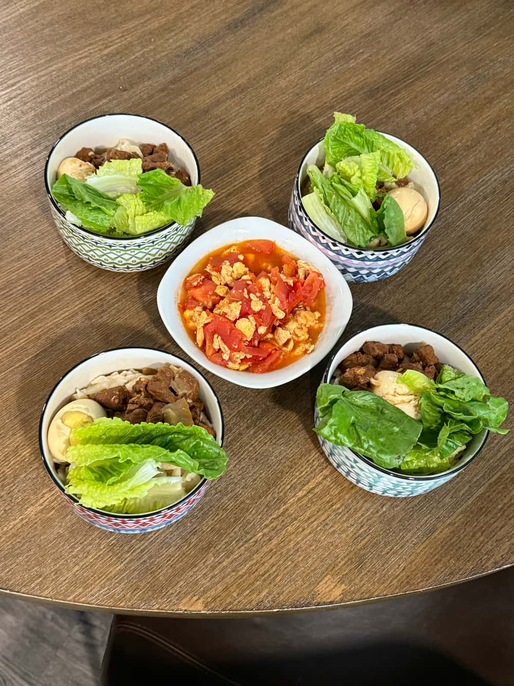
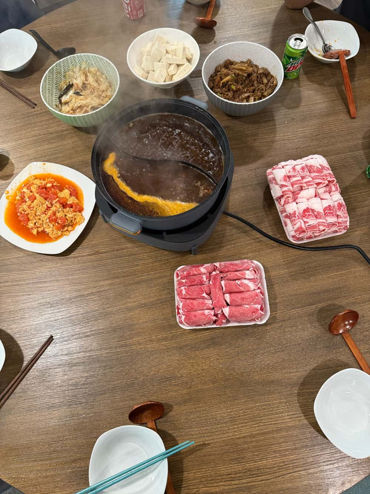
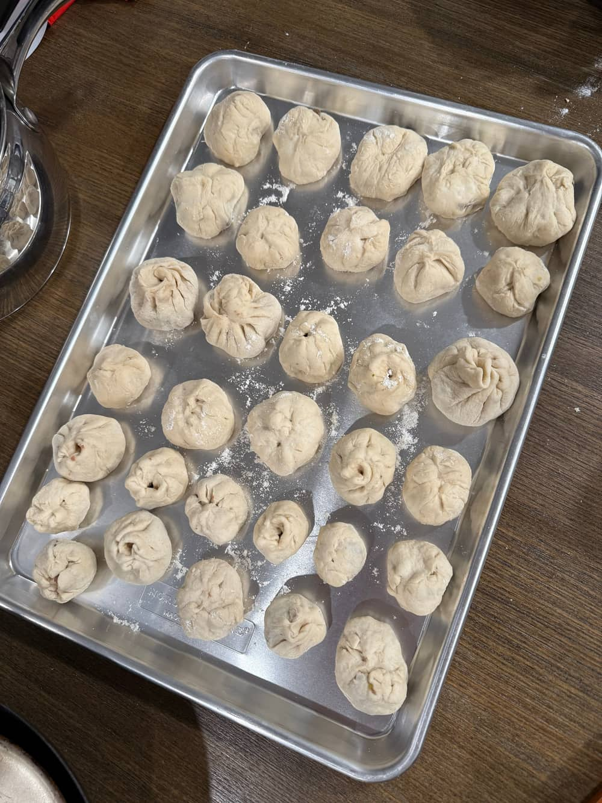

Research & writing
Lab discussions, literature reviews, and independent academic writing help me examine a question from more than one angle.
01 / About
I’m Zaria (Zhuodan) Yin, a student at the Indiana Academy for Science, Mathematics, and Humanities, with an expected graduation in May 2027.
Psychology is a place where many of my questions meet: how people remember, how they make sense of experience, and how we can investigate those processes carefully. As a student research assistant at Ball State University, I take part in weekly lab discussions and review research literature.
I also like turning ideas into experiences people can join. Through cultural programming, I have introduced Chinese traditions, built a touhu game, and taken responsibility for a hands-on craft activity. Our Closet has given me another setting for outreach, collaboration, and practical community work.
This site brings together those projects and the things I keep learning outside them.
Research experience and writingA few points of connection
Lab discussions, literature reviews, and independent academic writing help me examine a question from more than one angle.
International Student Council, cultural events, calligraphy, and hands-on activities give me ways to share traditions through participation.
Dance, guzheng, guqin, choir, tennis, and golf are other parts of my life. Some are long-standing interests; others are newer things I am learning.
Before the Indiana Academy, I studied at Zhengzhou Foreign Language School in China. Mandarin is my native language; I also use English, study Korean, and explore Spanish through self-study.
I participate in the International Student Council and Global Scholar program, and have attended the Youth Environmental Leadership Summit at Indiana University Bloomington in two separate years.
View the full overviewPractice & expression

Dance has been part of my life since childhood. I began with Chinese folk dance, spent approximately two years studying ballet, and later explored jazz and K-pop.
My experiences include dance club and competition performances at Zhengzhou Foreign Language School, as well as K-pop performance at a Korean cultural event.
Arts, activities, and other interestsArts · A few earlier moments
These photographs record a childhood performance, a New Year concert, and a summer concert.



Music · Summer 2026

I began studying guqin while back in China during the summer of 2026. This photograph shows the instrument and notation from that practice.
Music has also been part of my life through guzheng study and school and community performances.
Athletics · 2026
I played golf in 2026 and took part in golf senior night. Playing matches also gave me the chance to make a good friend.


Beyond the projects / Everyday life
Cooking is another part of my life abroad. Here are a few things I’ve made along the way: everyday meals, hot pot, and handmade buns.



Continue exploring